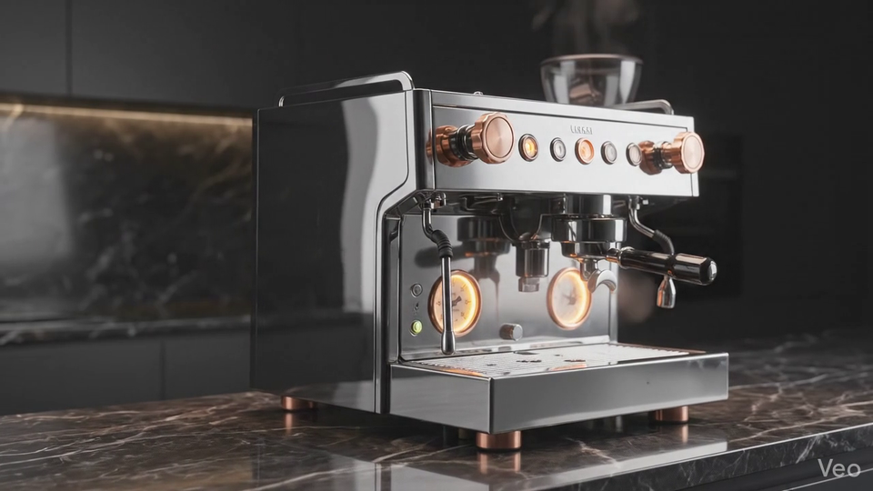
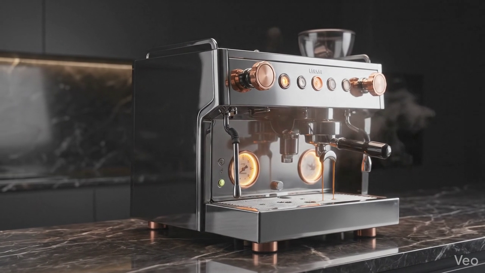
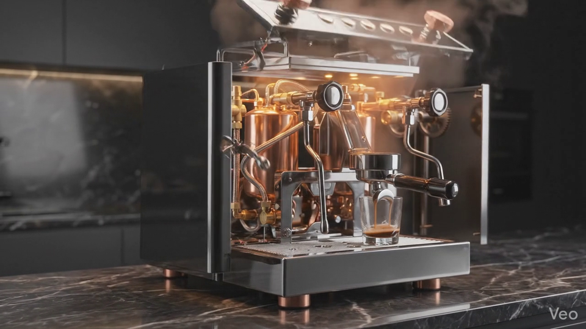
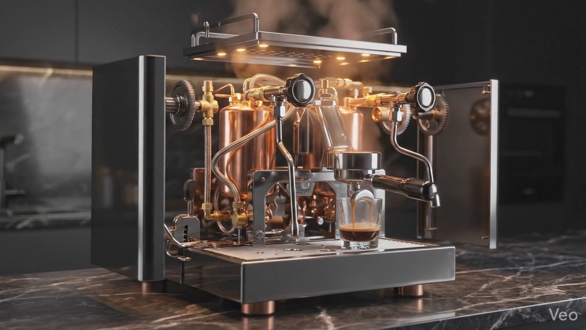
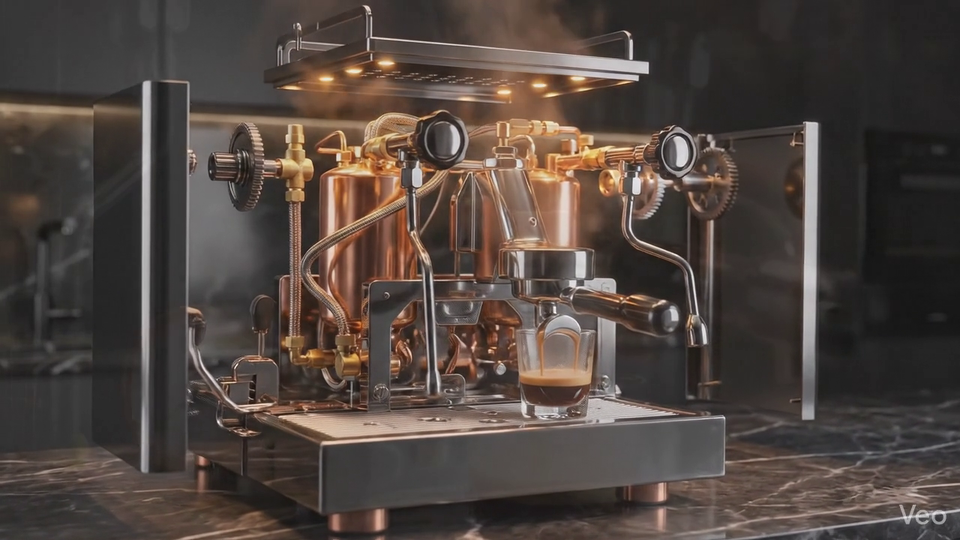

Artigianale · Dal 1887
L'Arte del Caffè Perfetto
Ogni estrazione è un rito silenzioso: ottone caldo, rame vivo e la pazienza di quattro generazioni milanesi custodita in una sola leva.
Scopri la Macchina ↓La rivelazione della forma
Un meccanismo che respira lentamente
Il Cuore di Rame
La caldaia martellata a mano, temprata dal tempo
Forgiata in rame massiccio e rifinita con una patina sobria, la caldaia trattiene il calore con la calma di una stufa antica. La superficie vive di piccoli colpi visibili, memoria del martello e della mano che l'ha alzata in bottega.


Pressione Artigiana
Nove bar custoditi per ventisette secondi di estrazione
La pressione non aggredisce il caffè: lo accompagna. La leva, bilanciata come una cerniera teatrale, consegna una forza costante e composta per ottenere crema fitta, corpo setoso e un finale pulito.
Ingegneria di Precisione
Tolleranze entro ±0.01mm, affidate a un solo artigiano
Ogni filettatura, ogni sede, ogni raccordo nasce dallo stesso banco di lavoro. La precisione non è industriale: è personale. Un'unica mano controlla gli accoppiamenti fino a renderli inevitabili.


L'Equilibrio del Calore
Una temperatura ferma entro ±1°C, dal primo alzarsi del vapore
Il calore circola in silenzio, senza sbalzi improvvisi. La massa metallica e il percorso dell'acqua cooperano per mantenere il gesto coerente, tazza dopo tazza, come una partitura eseguita sempre nello stesso modo.
Costruzione Eterna
Ottone pieno e cromo profondo, nati per sopravvivere al proprietario
Nessuna plastica distrae dalla promessa di durata. L'ottone porta il peso, il cromo custodisce il riflesso, le viti si stringono con la soddisfazione di un oggetto destinato ad essere tramandato, non sostituito.

Misure della bottega
Numeri pronunciati sottovoce
0 Bar
Pressione Professionale
La crema si posa densa, senza fretta.
±0°C
Stabilità Termica
Il calore resta disciplinato per tutto il pull.
0 Secondi
Riscaldamento Completo
Dal silenzio alla prontezza in mezzo minuto.
0mm
Portafiltro Professionale
Un diametro classico, degno di un banco serio.
“Una macchina che non serve soltanto il caffè: conserva l'onore del banco e il tempo di chi lo gestisce.” — Gazzetta del Caffè Milanese, 1931
Cronaca di famiglia
Una lettera da Milano, custodita nel metallo
Nel , in una strada laterale fra Brera e Cordusio, Cesare Montalbano inaugurò una bottega minuscola dedicata ai metalli nobili e alle macchine che chiedevano pazienza. Diceva che un espresso ben fatto dovesse pesare come una promessa mantenuta.
Suo figlio Lorenzo portò la precisione, aggiustando valvole e filettature con una disciplina quasi musicale. Negli anni della ricostruzione, la famiglia imparò a proteggere la bellezza senza renderla fragile: ottone spesso, leve sobrie, superfici lucidate per riflettere lampade calde e tovaglie di velluto.
Oggi la quarta generazione realizza ogni macchina come si finisce una dedica. Il risultato non appartiene alle mode né ai cataloghi stagionali. Appartiene a chi desidera lasciare qualcosa di tangibile sul banco, e magari in eredità.
Lista d'Attesa Esclusiva
Riservato a Pochi
La produzione resta limitata a 120 unità l'anno, finite e consegnate a mano nel laboratorio di Milano.